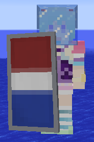

右图则为旗帜生成的主要界面，接下来将讲解其内容。
如图所示，我们生成的是一个盾牌，在1.9中增加的盾牌和1.8中的旗帜是一样的，所以放在了一起。
我们的样式分为两层，首先底色是白色，第一层的样式是上行边线，颜色为红色，第二层的样式是下行边线，颜色为蓝色。
Tip：勾上实时显示即可看到实时预览，与游戏内效果几乎一致。
我们的样式共两层，此时需要再点击一次下一层来保存第二层的内容，之后点击生成。
↑这就是我们生成出来的盾牌了。
/give @p minecraft:shield 1 0 {BlockEntityTag:{Base:15,Patterns:[{Pattern:"ts",Color:1},{Pattern:"bs",Color:4}]}}